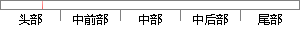

草图绘制时尺寸取公差中值，完成后单击完成草图如图1-2所示。
片段位置图

相似结果|
相似片段 1：，分别输入拉伸尺寸为2mm、478mm，单击图形区域右上角的图标舻，结束草图的绘制。完成顶梁半个上盖板模型的创建，如图3．1所示。图3．1半个上盖板Fig3—1Ahalftopheadlate(3
相似片段 2：单击“草绘”工具，在“FRONT”面绘制二维草图，绘制完成的二维草图如图2．8所示，对二维草图进行尺寸标注；图2．8绘制二维草图Fig．2．8 Draw a two-dimensional
相似片段 3：参数设置如图3．10所示。图3．10滚轮切除一旋转特征设置完成后，单击j一按钮即可生成旋转实体，如图3．2所示总之，零件造型一般过程是：先绘制草图，在草图的基础上进行特征操作，然后在特征上添加其他特征，最后完成零件的设计。
|
※ 片段修改建议 ※
近似词参考：- 公差：公役
系统自动生成语句：草图绘制时尺寸取公役中值，完成后单击完成草图如图1-2所示。
注：本片段修改建议为系统自动生成，仅供参考。